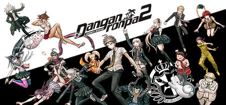

- Danganronpa: Trigger Happy Havoc
- Danganronpa 2: Goodbye Despair
- Danganronpa Another Episode: Ultra Despair Girls
- Danganronpa V3 Killing Harmony

Danganronpa 2: Goodbye Despair is a visual novel adventure game developed
by Spike Chunsoft. It is the second game in the Danganronpa franchise,
following 2010's Danganronpa: Trigger Happy Havoc. It was first released
in Japan for the PlayStation Portable in July 2012, with a port released
for the PlayStation Vita in Japan in October 2013, and worldwide
by NIS America in September 2014.
A port for personal computers was also released in April 2016,
as well as a bundle containing the first Danganronpa for the PlayStation 4
in March 2017, called Danganronpa 1-2 Reload.